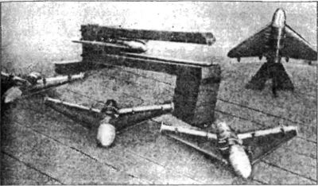
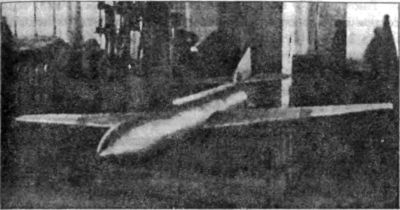

Крылатые ракеты РНИИ
Успешный запуск «девятки» побудил первую бригаду ГИРДа ускорить работы над ракетой «ГИРД-Х», которую проектировал еще Фридрих Цандер для апробации в условиях настоящего полета отдельных узлов и приборов будущих ракетопланов.
Согласно проекту, ракета «ГИРД-Х» должна была иметь длину 2,2 метра, стартовый вес — 29,5 килограмма, из которых 8,3 килограмма — вес топлива. На ракете был установлен двигатель «10» с вытеснительной подачей топлива (жидкий кислород и этиловый спирт) и тягой в 70 килограммов.
Первый пуск ракеты «ГИРД-Х» состоялся 25 ноября 1933 года (то есть уже через три месяца после старта «девятки»). Ракета взлетела вертикально, достигнув высоты в 80 метров.
Осенью 1933 года Газодинамическая лаборатория и МосГИРД объединились и на их базе начал работать Реактивный научно-исследовательский институт (РНИИ). Идея объединения созрела давно, когда представители этих двух коллективов познакомились с результатами работ друг друга. Идея понравилась и «высокому покровителю» Тухачевскому, который энергично принялся претворять ее в жизнь.
В результате 31 октября 1933 года по представлению Тухачевского Совет Труда и Обороны утвердил постановление об организации РНИИ. Сергей Королев был назначен на должность заместителя начальника института. При этом он получил звание дивизионного инженера и стал носить два ромба на петлицах.
В 1934 году Королев опубликовал свою первую серьезную работу — книгу «Ракетный полет в стратосфере». Книга эта, написанная простым доступным языком, популяризировала идеи ракетной техники; в ней подводился некий промежуточный итог работе, проделанной как в ГИРДе, так и в других научных группах.
В этой книге Королев приходит к неожиданным выводам:
«Достаточно посмотреть на <…> примеры ракетного планера и высотного самолета и сравнить их с составной ракетой Оберта и др. В первом случае — неуклюжий тяжелый взлет перегруженного аппарата, полет в течение коротких минут на практически ничтожной высоте и затем посадка туда, куда придется, так как мотор остановлен из-за израсходования всего горючего. В другом случае — мгновенный легкий взлет, скорости во много сотен метров в секунду и громаднейшие высоты.
Отсюда можно сделать два вывода
Первый — это необходимость и целесообразность применения ракет, сразу развивающих достаточные скорости и испытывающих поэтому весьма значительные ускорения. Это — задача сегодняшнего дня.
Второй — полет человека в таких аппаратах в настоящее время еще невозможен. Повторяем еще раз, что в данном случае имеется в виду не подъем, а полет по некоторому заданному маршруту с работающим мотором.
Понятно, что ракета, благодаря своим исключительным качествам, т. е. скорости и большому потолку (а значит и большой дальности полета), является очень серьезным оружием. И именно это надо особенно учесть всем интересующимся данной областью, а не беспочвенные пока фантазии о лунных перелетах и рекордах скорости несуществующих ракетных самолетов».
Именно этот фрагмент любят цитировать историки космонавтики, чтобы показать заинтересованному читателю момент разочарования Королева в идее ракетопланов в пользу ракет простой схемы. Однако дальнейшая деятельность конструктора отвергает этот тезис. Дело в том, что сразу после организации РНИИ Сергей Королев с соратниками начинает разработку серии крылатых ракет под индексом «06/1», «06/2» и так далее (в знаменателе указывался порядковый номер), которые, по сути, являлись моделями будущих ракетопланов.
Эти ракеты, как выяснилось, нужны были не только для экспериментов, они привлекли внимание военных, увидевших в них средство для поражения различных целей на земле и летящих объектов в воздухе.

Что же такое крылатая ракета в представлении Сергея Королева? Для того чтобы ответить на это вопрос, обратимся к его статье «Крылатые ракеты и применение их для полета человека» (1935 год):
«Крылатая ракета — летательный аппарат, приводимый в движение двигателем прямой реакции и имеющий поверхности, развивающие при полете в воздухе подъемную силу.
Будем считать, что взлет, набор высоты, дальнейший полет и затем планирование и посадка такого аппарата принципиально тождественны аналогичным эволюциям самолета.
Полет может преследовать достижение наибольшей высоты подъема с последующим планированием и посадкой или дальности, т. е. покрытие наибольшего расстояния по прямой или по заданному маршруту».
Итак, Королев вовсе не отказывается от планов строительства ракетного самолета — наоборот, в самом определении крылатых ракет он указывает на определенное сходство схем.
Уже в 5 мая 1934 года «гирдовцами» была испытана первая крылатая ракета серии «06/1», разработанная инженером Евгением Щетинковым и представлявшая собой модель бесхвостого планера с двигателем от ракеты «09». В ходе испытаний ракета пролетела около 200 метров.
Следующая ракета «06/2» являлась прототипом будущей большой ракеты «06/3» (другое обозначение — «216»). «Сердцем» ее был такой же двигатель, как и у первой жидкостной ракеты «09». Эта ракета предназначалась для пуска с земли по удаленным целям (крупным объектам и площадям). Она имела длину 2,3 метра, а размах крыла — 3 метра. Полетный вес ее доходил до 100 килограммов. Расчетная дальность составляла 15 километров. На вид это был миниатюрный самолет со свободнонесущим крылом толстого профиля и двухкилевым оперением. Баки для окислителя делались в виде труб, они одновременно служили и силовыми элементами крыла. Баки для горючего размещались в фюзеляже. Окислитель и горючее подавались в двигатель под давлением сжатого воздуха из баллона Двигатель располагался в хвосте, а автоматика и боевой груз — в носовой части.
Вот что вспоминает о полете крылатой ракеты «06/2» Михаил Тихонравов. Кроме него на старте тогда находились Королев, Щетинков и механики. После взлета ракета устремилась вверх и пошла на петлю. Замкнув петлю, она пролетела недалеко от стартовиков на высоте двух метров, пошла на вторую петлю и в конце ее врезалась в землю.
Когда вопросы динамики полета на модели «06/2» были отработаны, началась постройка ракеты «06/3», имевшей вид миниатюрного самолета с размахом крыла в 3 метра. На ней был установлен двигатель «02» (поздняя «спиртовая» модификация двигателя «ОР-2» конструкции Цандера).
Позже стали проектировать и строить четвертую крылатую ракету — «06/4» (другое обозначение — «212»). Это была ракета дальнего действия. Внешне она опять же напоминала небольшой самолет с трапециевидным крылом, хвостовым оперением и рулевым управлением. Длина фюзеляжа составляла 3,16 метра, размах крыла — 3,06 метра и диаметр фюзеляжа — 0,3 метра. Полетный вес достигал 210 килограммов, из них 30 отводилось на топливо и еще 30 — на боевой заряд. Расчетная дальность ракеты оценивалась в 50 километров. Внутри фюзеляжа размещались: в носовой части — боевой заряд, далее — аппаратура гироскопической стабилизации и автономного управления. В хвостовой части располагался жидкостный реактивный двигатель «ОРМ-65-1» конструкции Валентина Глушко. Он устанавливался на специальной раме и закрывался обтекателем-капотом с металлическим козырьком для защиты рулей ракеты от огня реактивной струи.

Ракету «212» построили в 1936 году. 29 апреля 1937 года состоялось первое огневое испытание. А всего таких испытаний в 1937–1938 годах было 13.
Другие две крылатые ракеты имели индексы «201» и «217». Ракета «201», по современным представлениям, может быть отнесена к классу «воздух — земля»; ракета «217» — к зенитным. На обоих вариантах устанавливался пороховой двигатель.
Ракета «201» (или «301») предназначалась для пусков с самолета по движущимся воздушным целям, а также и по земным объектам. Для нее создавалась особая аппаратура радиоуправления. Руководил этой работой профессор Шорин. Автоматы должны были командовать: «правый поворот», «левый поворот», «выше», «ниже», «взрыв».
На практике удалось проверить лишь одну команду, и то на другой ракете — «216». В нее вмонтировали приемник и, когда она находилась в полете, передали команду «взрыв». Была взорвана дымовая шашка, и Королев с товарищами наблюдал, как в небе по радиосигналу образовалось дымное облачко.
Интересно также то, что на многих ракетах вместо взрывчатого вещества в носовую часть закладывали небольшой парашют. В определенный момент парашют выстреливался, и ракета плавно спускалась на землю. Позже этот принцип был распространен Королевым на более мощные научные ракеты.
Разработка крылатой ракеты «217» производилась по заказу и тактико-техническим требованиям Центральной лаборатории проводной связи (впоследствии — Ленинградский филиал Государственного института телемеханики и связи). Работы были согласованы с ВВС и Управлением связи Красной Армии.
Ракеты «217» предназначались для поражения с земли движущихся воздушных целей, причем стабилизация и управление в полете, а также приведение в действие взрывателей должно было осуществляться телемеханическими приборами, при полете ракет по световому лучу прожектора, освещающего цель.
Для разрешения поставленной задачи ракета «217» была выполнена в двух вариантах.
Первый вариант «217/1» представлял собой ракету по нормальной самолетной схеме. Корпус ракеты имел цилиндрическую форму с обтекаемой носовой частью и слегка коническим отсеком на хвосте. Крыло свободнонесущего типа имело нижнее расположение. Хвостовое оперение состояло из стабилизатора, рулей высоты, киля и руля направления. В центральной части корпуса была расположена камера порохового ракетного двигателя.
Носовой отсек предназначался для телемеханических приборов, а в головной части — для взрывчатого вещества. Запуск ракеты предусматривался со специального пускового станка, позволяющего делать грубую наводку на цель.
Вес конструкции ракеты без заряда, телемеханики и боевого груза составлял 82,5 килограмма; с телемеханикой и боевым грузом — 102,5 килограмма. Согласно расчетам, при вертикальном старте ракета могла развить скорость около 260 м/с, выйдя на высоту 3000 метров. Максимальная скорость полета при горизонтальной траектории — 280 м/с, наибольшая горизонтальная дальность (без участка планирования) — до 6800 метров, наибольшая дальность с участком планирования — 32 километра.
Второй вариант ракеты — «217/И» — принципиально отличается от первого и от общепринятых самолетных схем ввиду специфических условий и особенностей. Так как, преследуя подвижную цель, ракета должна быть весьма маневренной и быстро отклоняться от траектории установившегося движения в любую сторону, у «гирдовцев» возникла мысль о схеме ракеты, симметричной в аэродинамическом отношении относительно продольной оси. «217/П» представляла собой четырехкрылую бесхвостую ракету с малым удлинением и симметричным расположением и профилем крыльев. Корпус и размещение в нем порохового двигателя и отсеков для телемеханики и боевого груза аналогичны первому варианту. Рули были расположены на конце каждого крыла и соединены специальной системой управления. Максимальная скорость при вертикальной траектории для ракеты «217/П» — 265 м/с, наибольшая высота при вертикальном подъеме — 3270 метров, максимальная скорость полета при горизонтальной траектории — 300 м/с, наибольшая горизонтальная дальность (без участка планирования) — 6835 метров, наибольшая дальность с участком планирования — 19 километров.
Летные испытания ракет производились на Софринском артполигоне под Москвой запуском с пускового станка, представлявшего собой сварную трехгранную ферму длиной 10 метров, имевшую направляющие угольники, по которым при старте скользила ракета. Для проведения всевозможных предварительных исследований, опытов и проверки разных схем крыльев и оперения были изготовлены небольшие модели пороховых ракет.
Испытания уменьшенных моделей ракет велись в течение 1935–1936 годов параллельно с работами по ракетам «217», что позволило с минимальными затратами получить обширный экспериментальный материал. Наибольшая дальность полета составила у моделей 2 километра при высоте подъема 700 метров, а у ракет «217» — 1 километр при высоте подъема 300–500 метров.
Всего было сделано значительное количество пусков моделей и несколько пусков ракет «217» без приборов стабилизации и телемеханического управления (при этих полетах рули ракет закреплялись неподвижно). Ракета первого варианта «217/1» после старта значительно уходила в сторону от первоначального направления (на дальности в 1 километр до 100 метров), ложилась в плавный вираж, переходивший затем в падение. Ракета второго варианта «217/Н» двигалась точно в плоскости пускового станка, не уходя никуда в сторону. После окончания горения порохового заряда двигателя ракета продолжала устойчивый полет по инерции, который ничем заметно не отличался от полета с двигателем. Было отмечено, что симметричная схема ракеты с крыльями малого удлинения обладала гораздо большей устойчивостью по сравнению с другими схемами.
После успешных полетов крылатых ракет Сергей Павлович стал начальником сектора, а потом и целого отдела.
Позднее под его руководством была разработана оригинальная методика испытания ракет, для чего построили специальные стенды и приспособления. Так, Королев и его помощники впервые применили старт ракеты с катапульты.
Для этого ими был построен длинный рельсовый путь, по которому ходила тележка. На ней — пороховые двигатели. Они служили стартовыми ускорителями, разгоняли тележку и установленную на ней стартующую ракету. После отрыва от тележки ракета летела уже под действием тяги собственного двигателя. Ракета набирала высоту в зависимости от запаса топлива на борту, а после выключения двигателя автоматически переводилась в планирование или пикирование на цель.
Большое внимание «гирдовцы» уделяли вопросам управления и стабилизации полета крылатой ракеты. Была даже предложена система самонаведения и заказано оборудование, необходимое для этого. Но, к сожалению, оно так и не поступило в РНИИ.
Непосредственно этими вопросами занимался инженер Пивоваров. По его чертежам были построены несколько гироскопических приборов стабилизации (ГПС). Опробовали эти приборы сначала на пороховых крылатых ракетах. Потом перенесли автоматы на ракеты с ЖРД. Наиболее полно управление с помощью автоматов было применено на ракете «06/4» (или «212»).
Были последовательно разработаны и испытаны гироскопические автоматы на одну, две и три степени стабилизации. Автопилоты разрабатывались с учетом специфики их работы на ракетах. Например, для объектов, пускаемых с земли (типа «216» и «212»), характерными особенностями являлись: значительные перегрузки при старте, быстрое нарастание скорости и увеличение угла подъема при наборе высоты, последующий переход к полету по инерции до скорости планирования, затем планирование на угле и так далее.
В последние годы существования РНИИ было сделано еще несколько десятков огневых пусков жидкостных крылатых ракет. Максимальная достигнутая высота подъема составила около километра и дальность полета от 2,5 до 3 километров. При этом следует отметить, что устойчивый полет в плоскости полета был достигнут только в нескольких отдельных случаях: на дальности не более 1000 метров и на высотах 400–500 метров. В дальнейшем с ростом скорости полета и угла подъема автопилоты оказывались неспособными удержать ракету, и последняя начинала «петлять», делала крутые виражи с набором высоты и наконец переходила в падение.
Даже первые эксперименты с моделями крылатых ракет убедили Королева в том, что ракетоплан будущего, способный подниматься в стратосферу и выше, должен быть спроектирован на основании других принципов, нежели обыкновенный самолет.
Наиболее детальный анализ существовавших в то время возможностей для создания такого аппарата содержится в выступлении Сергея Королева на I Всесоюзной конференции по применению ракетных аппаратов для исследования стратосферы, состоявшейся 2 марта 1935 года в ЦДКА имени Фрунзе. В этом выступлении Королев впервые четко определил особенности и возможные схемы пилотируемой ракеты, рассчитал ее весовые и летные характеристики.
«Различными изобретателями, — говорил Сергей Павлович, — было предложено в разное время множество всяческих ракетных аппаратов, которые, по мысли авторов, должны были внести переворот в технику. В большинстве своем эти схемы были очень слабо и в собственно ракетной своей части малограмотно разработаны. В последнее время многие предложения сводились к простой постановке ракетного двигателя (на твердом или на жидком топливе) на общеизвестные типы самолетов. Нет надобности много говорить о всей несостоятельности подобного механического перенесения ракетной техники в авиацию».
Тогда же Королев пояснил, что при всем сходстве ракетного и винтового летательных аппаратов есть различие в динамике их полета, траектории и весовых данных. Ракетоплан представлялся Королеву в виде свободнонесущего моноплана с центрально расположенным фюзеляжем и хвостовым оперением на нем. Ракетоплану присущи малый размах, малое удлинение, малая несущая поверхность. Фюзеляж будет иметь значительную длину, и в нем расположатся в основном двигатели и баки, питающие двигательные устройства. Возможно, что крыло также будет использовано для размещения различных агрегатов двигателя и приборов.
В своем выступлении Сергей Павлович указал те узловые пункты в создании ракетоплана, от которых зависит успех всего дела. Первый — создание мощного двигателя на жидком топливе. Именно от решения этой задачи, считал Королев, зависит «осуществление стратосферного полета человека на ракетном аппарате». Второй — создание герметической кабины больших габаритов, что представляет собой серьезную трудность. Третий — создание и эксплуатация «такого громадного высотного аппарата и необычайная трудность работы с громадными количествами жидких газов».
Сергей Павлович рассмотрел пути преодоления этих трудностей. И сделал он это на основе точного расчета, иллюстрируя свои выводы многочисленными графиками. Концентрированное выражение его мысль нашла в приведенных им данных простейшей крылатой ракеты для полета человека в стратосферу при условии ее минимального веса. Таким весом Сергей Павлович назвал 2 тонны. Пилоту в скафандре он отводил 5,5 % всего веса аппарата, двигателю — 2,5 %, аккумулятору давления — 10 %, бакам — 10 %, конструкции — 22 %. Остальную половину веса составляло топливо. Сергей Павлович считал, что при тяге 2000 килограммов ракета такого веса смогла бы поднять человека на высоту 20 километров.
Полет крылатой ракеты (или ракетоплана) с более совершенным двигателем рисовался Королеву в таком виде: аппарат разгоняется по земле отбрасываемыми пороховыми ускорителями до скорости 80 м/с, взлетает и начинает набор высоты под углом 60 градусов на собственном двигателе. После выработки всего топлива ракета переводится в вертикальный полет по инерции и достигает высоты 32 километров. С этой высоты она пикирует на скорости 600–700 м/с (т. е. на скорости вдвое выше звуковой). Время полета предполагалось 18 минут и дальность — 220 километров.
«В итоге наших расчетов, — говорил Сергей Павлович, — мы получили очень скромные высоты, порядка 20 километров. Заглядывая несколько вперед, отказываясь от технически невыгодных конструкций, совершенствуя двигатель, мы видим возможность достижения высот порядка 30 километров. Даже и эти, сравнительно небольшие, высоты не даются легко».
«Что же можно сделать еще? — задавал Королев сам себе вопрос и сам же отвечал: — Надо искать новые схемы».
Сергей Павлович предлагал попробовать комбинированные и составные ракеты.
«Большая ракета, — пояснял он, — имеет на себе меньшую до высоты, скажем, 5000 метров. Далее эта ракета поднимает еще более меньшую на высоту 12000 метров, и, наконец, эта третья ракета или четвертая по счету уже свободно летит на несколько десятков километров вверх».
Выдвинул он и другое предложение: «Возможно, будет выгодным подниматься вверх без крыльев, а для спуска и горизонтального полета выпускать из корпуса ракеты плоскости, которые развивали бы подъемную силу».
И в докладе на конференции, и в статье в журнале «Техника Воздушного Флота» Сергей Павлович из своих расчетов сделал практический вывод:
«Если не задаваться установлением каких-либо особых рекордов, то, несомненно, в настоящее время уже представляет смысл постройка аппарата-лаборатории, при посредстве которой можно было бы систематически производить изучение работы различных ракетных аппаратов в воздухе.
На нем можно было бы поставить первые опыты с воздушным реактивным двигателем и целую серию иных опытов, забуксируя предварительно аппарат на нужную высоту. Потолок такого аппарата может достигнуть 9-10 километров.
Осуществление первого ракетоплана-лаборатории для постановки ряда научных исследований в настоящее время хотя и трудная, но возможная и необходимая задача стоящая перед советскими ракетчиками уже в текущем году».